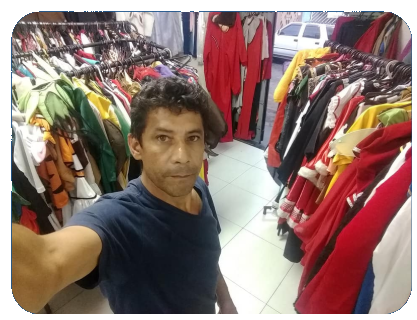
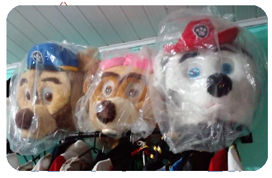

Sobre nós
Há 9 anos, Francisco Jacinto De Almeida transformou seu amor pela costura em um negócio que encanta crianças e adultos na Zona Leste de São Paulo.
Com habilidade manual e atenção aos detalhes, ele criou a Fantasias & Mascotes, uma loja que oferece peças artesanais únicas,
além um atendimento cheio de carinho e cuidado.


Somos reconhecidas pela qualidade dos nossos produtos e pela experiência mágica que proporcionamos.
Seja para festas infantis, eventos corporativos ou ações de humanização, cada peça é feita para contar histórias e inspirar sorrisos.
Site feito por Jimema Acarapi, Julia Peraro e Matheus Feitosa